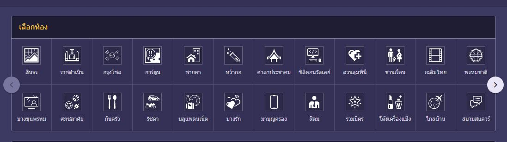

ส่วนแรก Navigation Bar ด้านซ้าย
แถบ Navigation Bar ของเว็บพันทิป ที่มาแสดงตัวอย่างนี้ เรียกว่า Vertical Navbar ใช้หลักการในการสร้างหลักๆ
คือ
ใช้ element <ul> และปรับ style background-color witdh height และ positon = fixed
ตามกรอบ iframe ด้านล่าง คือการตรึงแนวเวลา scroll เมาส์ขึ้นลง จะเลื่อนแต่ส่วนเนื้อหาของเว็บเท่านั้น
ส่วนลิงค์ภายใน Vertical Navbar ใช้ element <li> และ <a> อย่ภายในอีกทีนั่นเอง และปรับ
style ของ <a> ด้วย :hover ใช้เวลานำเมาส์ไปวางที่ลิงค์นั้น และ style สำหรับไฮไลต์ลิงค์ที่กำลัง
เปิดอยู่ในหน้าปัจจุบัน ดังนี้
ส่วนที่สอง แถบลิงค์สำหรับเลือกห้อง

ส่วนนี้ใช้ grid-container โดยใช้ element <div> เป็นหลัก ปรับ style display=flex
ปรับ grid-templet column เป็น 12 column และใส่ <div> ซ้อน <div> อีกที เพื่อใช้เป็นกรอบด้านใน
ปรับ style
border text-align background-color font-size